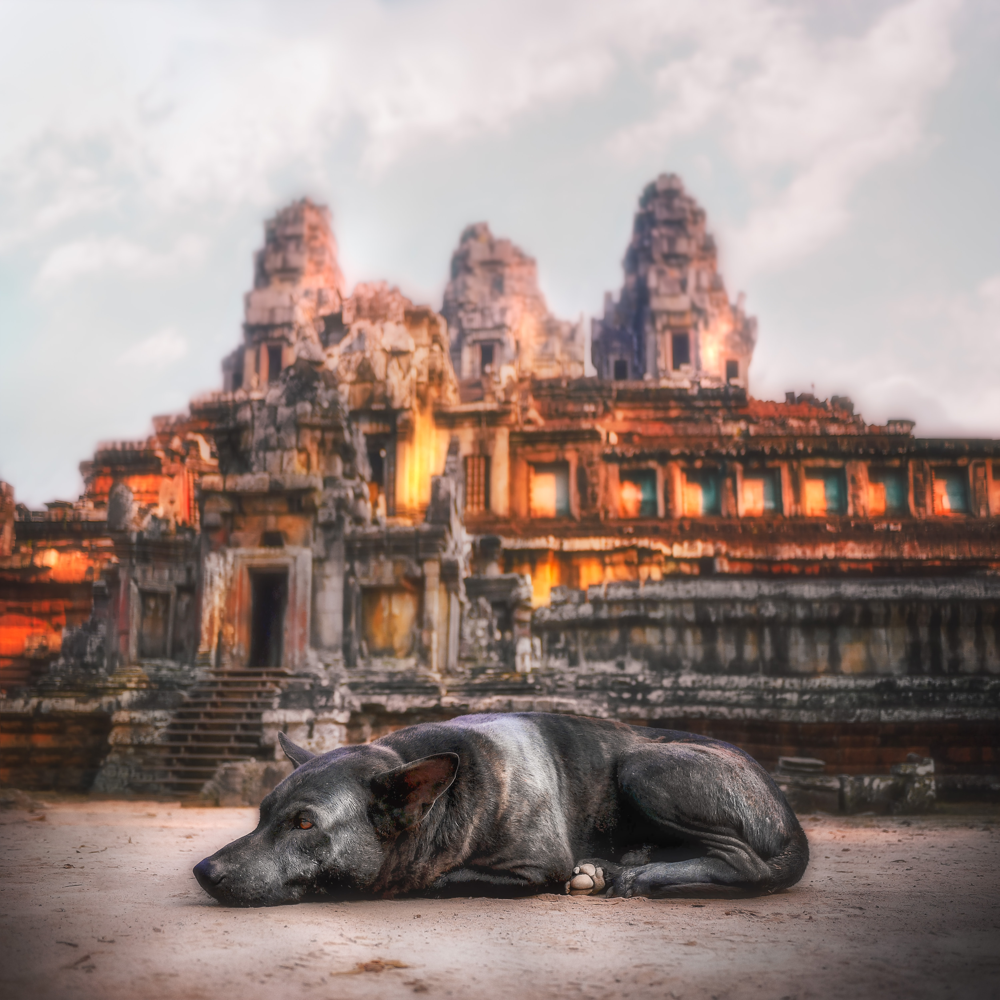

The history of Asia can be seen as the collective history of several distinct peripheral
coastal regions such as East Asia, South Asia, Southeast Asia and the Middle East linked
by the interior mass of the Eurasian steppe. See History of the Middle East and History of the
Indian Subcontinent for further details.
The coastal periphery was the home to some of the world's earliest known civilizations and
religions, with each of the three regions developing early civilizations around fertile river valleys.
These valleys were fertile because the soil there was rich and could bear many root crops.
The civilizations in Mesopotamia, India, and China shared many similarities and l
ikely exchanged technologies and ideas such as mathematics and the wheel. Other notions
such as that of writing likely developed individually in each area. Cities, states, and
then empires developed in these lowlands.
The steppe region had long been inhabited by mounted nomads, and from the central steppes,
they could reach all areas of the Asian continent. The northern part of the continent, covering much
of Siberia was also inaccessible to the steppe nomads due to the dense forests and the tundra. These
areas in Siberia were very sparsely populated.

Parts of Asia
The 5 major regions of Asia are Southeast Asia, East Asia, Central Asia, South Asia, and Southwest Asia
(also known as the Middle East).
Some geography sources will also include North Asia as the 6th region, but we chose to simply make our
Russia page the de facto page for North Asia because it is essentially the only country in the region.
Asian Culture
The culture of Asia encompasses the collective and diverse customs and
traditions of art, architecture, music, literature, lifestyle, philosophy,
politics and religion that have been practiced and maintained by the numerous
ethnic groups of the continent of Asia since prehistory. Identification of a specific
culture of Asia or universal elements among the colossal diversity that has emanated
from multiple cultural spheres and three of the four ancient River valley civilizations
is complicated. However, the continent is commonly divided into six geographic sub-regions,
that are characterized by perceivable commonalities, like culture, religion, language and
relative ethnic homogeneity. These regions are Central Asia, East Asia, North Asia, South Asia,
Southeast Asia and West Asia.